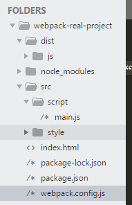

webpack与实际项目的运用
- 新建项目文件夹webpack-real-project->npm init->npm install -g webpack->npm install webpack --save-dev,新建src目录放原代码，dist目录放打包的静态文件
- 目录文件结构如下：


或者

打包后：


或者：


或者：


- 在index.html文件中，引用了打包后的js文件，如果js文件的文件名是hash值时，则是不确定的，那么如何引用呢
执行如下命令：

如何使用呢？在webpack.config.js文件中添加：

在命令行执行webpack命令之后，查看index.html文件

但是生成的index.html是在dist/js目录下：

如何满足项目需求呢？
指定模板，发现生成的index.html文件是在模板的基础上生成的


修改输出目录

此时index.html在dist目录下了

指定名字：


- 自动生成html页面
在webpack.config.js文件中，

那么在模板index.html中，如何引用title呢，如下

那么新生成的index.html的title会被更新


可以在这个网站 https://www.npmjs.com/ 查看插件的详细信息
- 如何实现有的js文件放在head中，有的放在body中
webpack.config.js中

模板文件中：

- 为满足上线需求给引入的js文件一个路径

webpack之后，就会给js文件的路径加上以publicPath开头的绝对路径

对生成的html文件进行压缩


- 多页面应用

模板html如下：

但似乎每次都要指定chunks太麻烦了，使用excludeChunks，除了某某文件

- 提高页面性能，将初始化脚本嵌入页面，而不是以链接的形式引入，因为这样会增加HTTP请求


然后再使用compilation，就可以直接将js的内容嵌入script标签中


此时我们发现，在body中也引入了main.js文件，这是因为我们的inject："body",当已经在head中引入main.js后，不需要再在body中引入，那么怎么做？


loader的学习
- 新建目录文件如下


- 使用
我的webpack.config.js这么设置的话，打包会出错，如果是这样就对了或者可以在package.json中定义，


此时webpack之后就可以看见生成的index.html和main.bundle.js
如何写绝对路径：

处理项目中的css
- 安装：npm install style-loader css-loader --save-dev


- 配置
在webpack.config.js中配置loader这样就可以打包了！！！

- css的一些情况，添加浏览器前缀
先安装postcss-loader再安装postcss的插件 autoprefixer新建postcss.config.js配置如下：webpack.config.js配置如下：然后打包就会自动添加前缀了如果在common.css中import进来一个文件，此时打包，发现并没有为引入进来的文件自动添加前缀，且出现两个style标签那么如何使能够自动为引入的文件的内容添加前缀呢？这样就可以了处理less文件


- 安装less、less-loader，install less --save-dev、install less-loader --save-dev
- 配置
webpack打包即可。检验postcss-loader是否生效：成功：如果在less中import less文件，那么需不需要指定importLoaders的值呢？答案是：不需要！处理sass文件


- 安装：npm install sass--loader --save-dev、npm install sass --save-dev
- 配置

处理模板文件
- 安装loader
npm install html-loader --save-dev配置：此时，当引入html-loader之后，html-webpack-plugin的titile会失效，取不到，此时将模板index.html改成index.ejs即可，同时，webpack.config.js中也需要改template:index.ejs同时，inject应该设置为"body"，如果是head，那在js执行时是取不到id为app的dom的这样就可以了如果是layer.ejs模板，安装ejs-loader, npm install ejs-loader --save-dev配置


处理图片以及其他文件
- 在css中指定图片----添加文件夹以及图片
使用图片安装loader，npm-install file-loader --save-dev配置：webpack


- 在项目的根目录下，模板文件index.html中引入图片
这样也是可以的，所以无论在哪引入图片，都会被loader直接处理

- 在layer.ejs中用相对路径引入图片，会发现在浏览器中显示不出来
怎么处理呢？继续使用相对路径的话：换成使用绝对路径


- 如何改变图片的默认输出路径dist/


- url-loader,npm install url-loader --save-dev
与file-loader类似，但可以指定limit参数，当图片或文件大小超过limit后，再丢给file loader处理，当小于limit时，会将图片或文件转为一个编码，就不再是url了dog.jpg大小为145KB，则将limit设置为200000（200KB），此时webpack试试之前之后发现图片没有再打包了，但现在文件大小却变大很多，这是因为图片的数据编码已经被打包进文件了此时在浏览器中，查看img url（这时layer.ejs的img路径为相对路径）包括.layer >div


- image-webpack-loader 安装
配置：打包，发现图片被压缩了